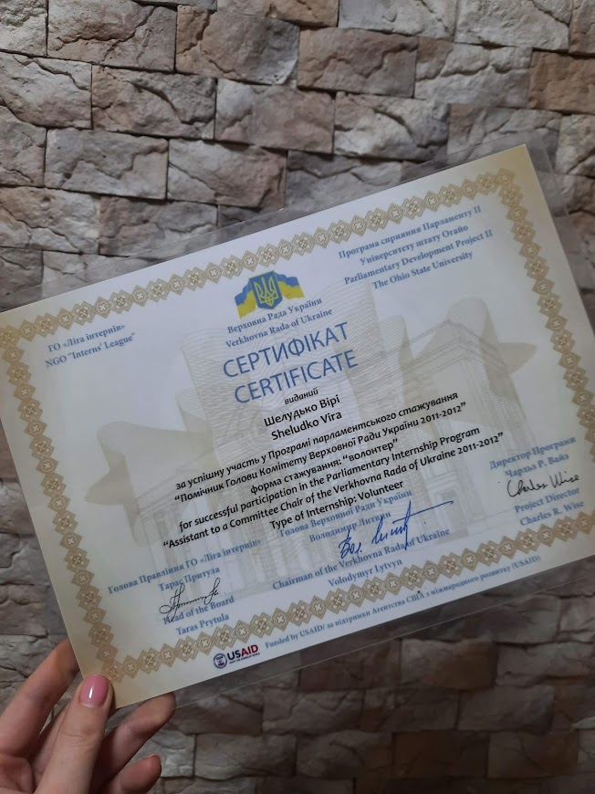
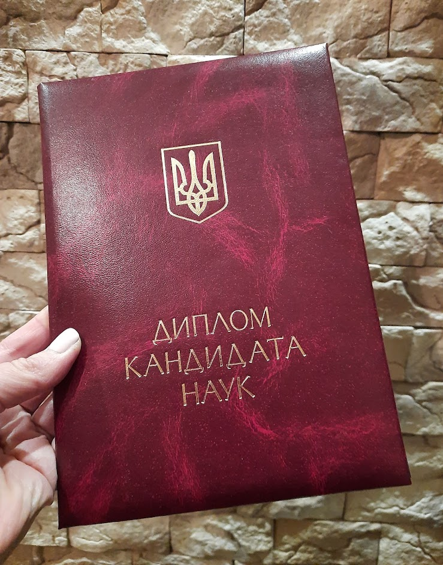
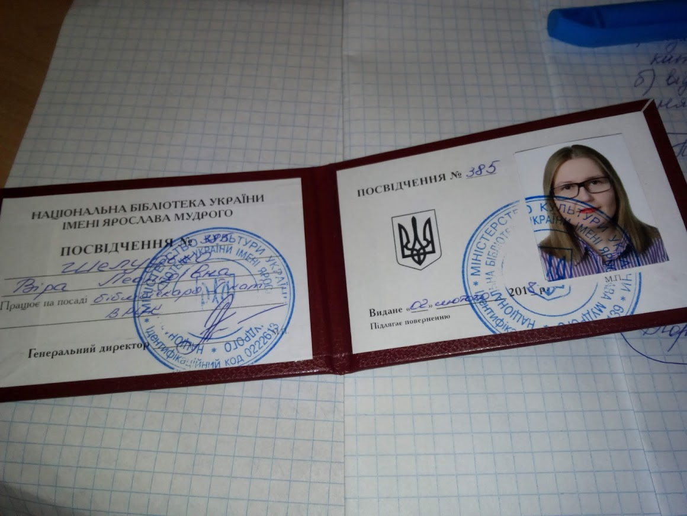
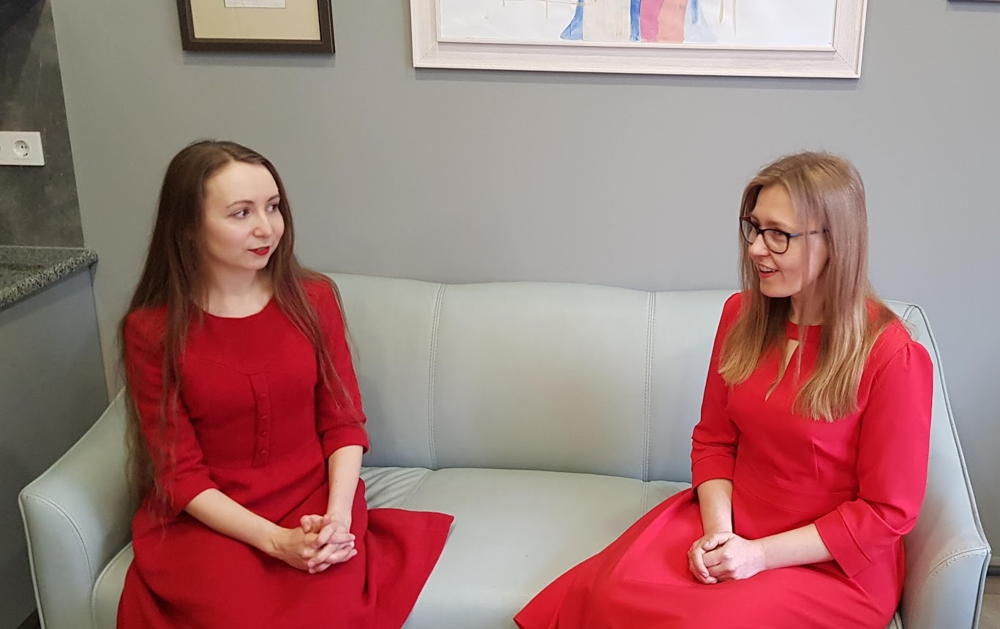

Про мене
Освіта
Проєкти
Блог
Контакти
Шелудько Віра
Я - соціолінгвіст, редактор, викладач української мови, бібліотекар і бібліограф. Крім природніх мене захоплють штучні мови. На цій сторінці можна дізнатися про мене майже все
Деякі факти про мене
 Пройшла стажування у 2011 - 2012 рр. у Парламенті України за програмою "Помічник Голови Комітету Верховної Ради України" у Комітеті Верховної Ради України з питань молодіжної політики, спорту та туризму. Це був дуже гарний старт, щоб зрозуміти свою цінність як фахівця та усвідомити важливість практики в будь-якій діяльності
 Зійснила соціолінгвістичне дослідження "Мовна особистість сучасного українського державного службовця у професійному дискурсі" з використанням психолінгвістичних методик у різних органах державної влади та місцевого самоврядування. Це сприяло тому, що я стала гарним фахівцем у лінгвістиці, розвинула свої навички спілкування із представниками такої відкритої на перший погляд і закритої за своєю суттю для загалу сферою, як державне управління
 Завжди починала працювати на найнижчій посаді, а потім підіймалася кар'єрною драбинкою маленькими кроками. Спершу в Національній бібліотеці України імені В. І. Вернадського: від бібліотекаря І категорії до провідного, від провідного до молодшого наукового співробітника... А потім - в Національній бібліотеці України імені Ярослава Мудрого: від бібліотекаря І категорії до провідного, від провідного бібліотекаря до головного бібліографа. І це мені не заважало паралельно займатися кількома проєктами
 Два роки була волонтером на проєкті "Безкоштовні курси української мови", де отримала неоціненний досвід як соціолінгвіст, викладач і громадський активіст. Саме завдяки цьому проєкту долучилася до багатьох інших крутих мовних ініціатив, зокрема до проєкту "Є-мова". Разом з командою проєкту створила вже 4 онлайн-курси з української мови як іноземної та мовного менеджменту
По ту сторону екрана
Покликання на відео: https://www.youtube.com/watch?v=CbYKXLhjLL0
Освіта
Основна
IT-курси
05.2022
ECMASCRIPT 6 (ITVDN)
04-05.2022
JavaScript Essential 2021 (ITVDN)
DOM
04.2022
JavaScript Starter (ITVDN)
04.2022
Git basics (ITVDN)
Проєкти
Пишу

Навчаю

Редагую

Кодую

Контакти